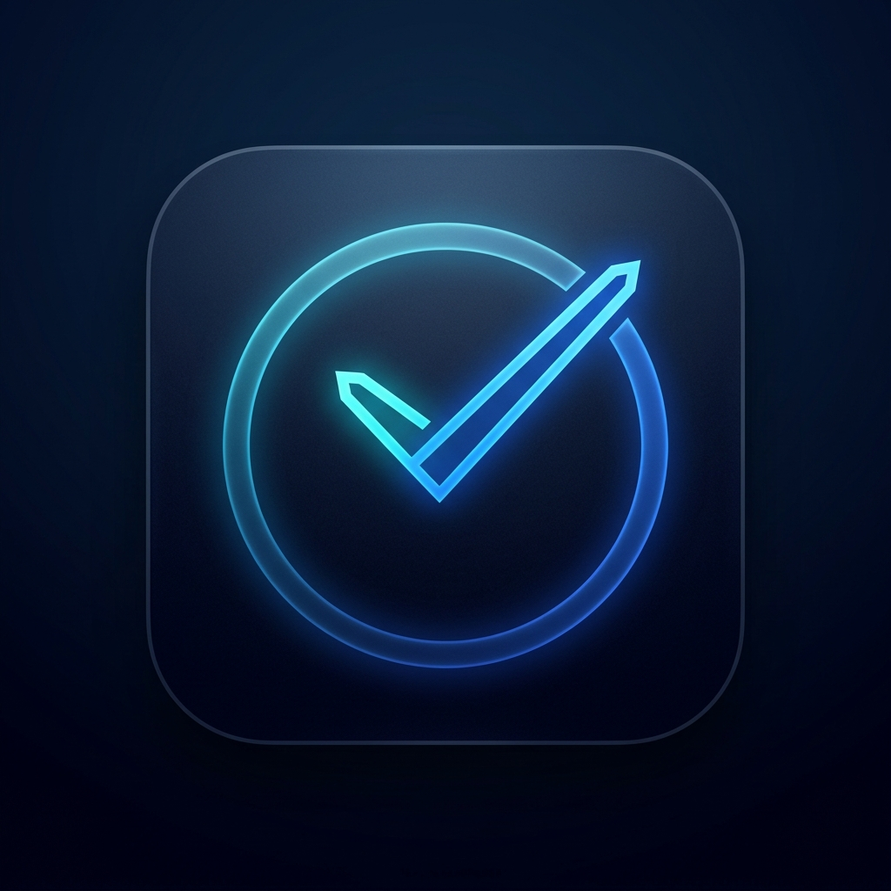

スマート勤怠＆工数
1タップ打刻・工数トラッカー
🌓
⚙
🔐 接続設定（この端末にのみ保存）
✕ 閉じる
GAS ウェブアプリ URL
合言葉（パスコード）
保存して接続テスト
リセット
⚡ 1タップ打刻（上書き自動判定）
① 開始シフト
8:45〜定時 17:30
7:50
朝当番
8:45
基本
10:00
10時
11:00
11時
13:00
13時
有休
休暇
② 退勤時刻（1タップ / 手入力）
実働 7.7h / 残業 +0.0h
定時 1730
+30m 1800
+1h 1830
⌚ いま
手入力可
記録する
出勤
-
有休/半休
-
時間外
-
合計時間
-
📊 工数内訳（朝当番 / 横60% / 神20% / 川20%）
0.0h
朝当番
0.0h
横 (残差)
0.0h
神 (20%)
0.0h
川 (20%)
0.0h
日次記録リスト
再読込 ↻